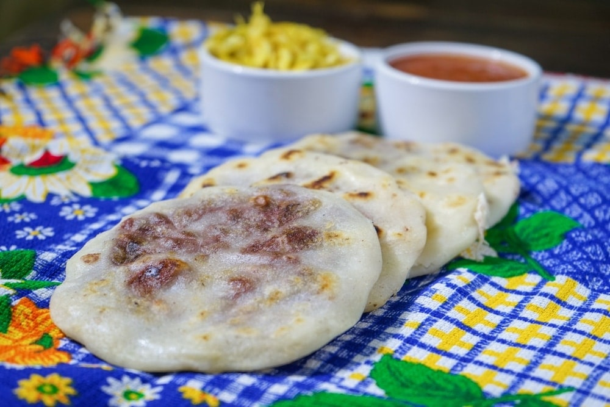

Platillos Típicos

Pupusas
El platillo más representativo de El Salvador, relleno de queso, frijoles, chicharrón y más.

Yuca con chicharrón
Servida hervida o frita, acompañada con curtido y chicharrón.

Tamales
De elote, pollo o pisques, son parte esencial de la cocina tradicional.